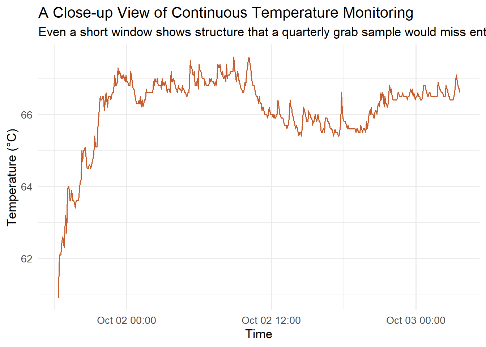

The Steamboat Springs geothermal field has been producing power for four decades, and for most of that time its surface expression (the springs, seeps, and steaming ground that give the area its name) had been quietly declining as production and reinjection reshaped the plumbing underground; that decline continues a much longer historical arc first documented by USGS geologists White, Thompson, and Sandberg in the 1960s, when Steamboat Springs already ranked among the largest geyser fields in the United States before twentieth-century development suppressed most of that activity. That story changed abruptly in June 2025, when a geyser-like eruption over 30 feet tall burst from an abandoned well at the Lower Sinter Terrace, an event documented in detail by Lindsey et al. (2026), whose monitoring team traced the buildup back to renewed steaming-ground activity first noticed in 2022. An eruption like that is not a random event; it is the visible tip of a much larger, mostly invisible change in subsurface pressure and fluid pathways, the same production/injection plumbing whose recent evolution is modeled by Dhakal et al. (2025), building on the groundwater monitoring framework Klein, Johnson, and Spielman established in 2007. The obvious question it raises, and the one this project exists to help answer, is how the system’s outflow has actually changed, and whether the monitoring network in place is good enough to tell the difference between routine variability and something new. A first, poster-stage answer already points toward reactivation of the existing conduit network rather than a new source; see the Results page for that finding, presented at the 2026 Geothermal Rising Conference as a direct continuation of Lindsey et al.’s work.
That question turns out to be harder to answer than it sounds, because the tools traditionally used to watch a hydrothermal system are mismatched to how fast the system can actually move. Regulatory and field chemistry sampling happens a few times a year at best, which is more than enough to miss a transient pressure pulse, a short-lived mixing event, or the kind of gradual drift that only becomes obvious once you have three years of data instead of three months. Different agencies and field crews also record things in different formats and at different resolutions, so simply lining up a well’s chemistry against its water level against a nearby creek’s conductivity has historically required a fair amount of manual reassembly before any comparison could even begin. The gap between how quickly the system can change and how coarsely it is normally observed is the central problem this project is built to narrow.
Of the properties that are practical to measure continuously, temperature and electrical conductivity are the most directly informative about what a hydrothermal system is doing right now. Temperature responds quickly to changes in flow pathways, to mixing between hot deep water and cooler shallow water, and to pressure changes that shift where fluid is moving; and because temperature loggers can record it every few minutes indefinitely, it captures exactly the kind of short-term variability that a quarterly chemistry sample would simply never see. Conductivity plays a related but distinct role: in Steamboat Creek, it stands in for chloride concentration, which is itself the tracer Michael Sorey’s classic studies used to estimate how much geothermal water is discharging from the system as a whole. Chloride behaves conservatively (it neither precipitates nor reacts appreciably on its way downstream), so multiplying its concentration by the creek’s discharge gives a mass flux that, combined with a reference concentration for the deep thermal water, converts directly into an estimate of geothermal outflow. Conductivity can be logged every few minutes for the cost of one instrument; chloride requires a lab. The practical question this project is chasing, and one of its three core objectives, is exactly how infrequently chloride actually needs to be sampled to keep a conductivity-based estimate of that outflow trustworthy.

A short window of raw temperature-logger data, illustrating the kind of short-term variability that would be invisible to periodic discrete sampling.
The approach this project takes is to stop treating each data type as its own island and instead fold everything (groundwater levels, field and laboratory chemistry, continuous temperature and conductivity, and now, increasingly, the physical construction records of the wells themselves) into one relational database, where every observation carries an explicit link to where and when it was collected and by what method. That structure is what makes it possible to ask genuinely cross-domain questions: whether a hydraulic gradient between two wells lines up with a chemical difference between them, whether a spike in creek conductivity coincides with a nearby field visit rather than a real signal, or whether the same well’s chemistry from a 1970s survey and a 2026 field sample tell a consistent story about how the outflow has evolved. None of those comparisons are possible when the underlying data live in disconnected spreadsheets; they become simple queries once the data live in a shared schema.
That same structure is also what prepares the ground for the modeling this project is building toward. Validated chemistry, once it is sitting in normalized tables rather than scattered lab reports, becomes a direct input to PHREEQC for speciation and mixing calculations; a time-aligned record of conductivity and the chloride samples that overlap with it becomes the training data for a calibrated Cl-conductivity relationship; and water levels and chemistry attached to precise well coordinates become exactly the input ArcGIS needs to interpolate a potentiometric surface and trace where a chemical signature is migrating underground. Each of those next steps depends on the data first being trustworthy and consistently structured, which is the whole reason this system exists before any of that modeling work begins.
Beyond any single analysis, the aim of this project is to build a framework that keeps working as new data arrive, rather than a static report that goes stale the moment the next field season starts. Every script that touches the database can be re-run safely on new data without duplicating or corrupting what came before, so the system’s picture of the Steamboat Hills field keeps sharpening as more springs are re-sampled, more wells are logged, and more conductivity data accumulates against the growing chemistry record. Although this platform was built specifically for Steamboat Hills, the same architecture (ingest once, validate consistently, integrate across sources, model on top) applies just as well to any environmental system where the hard part is not any single measurement, but making dozens of different kinds of measurement talk to each other.